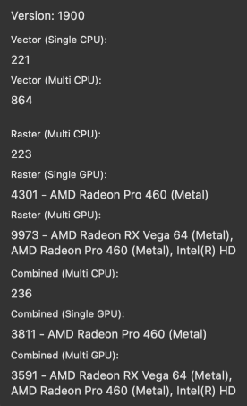

Affinity Photo 2 includes a benchmark to test your device's vector and raster performance.
The benchmark assesses the capability of your device's CPU to perform vector operations, its CPU and GPU to perform raster operations, and combined results for situations where vector and raster content is used together.

Results from different devices, whether Mac, PC or iPad, can be compared only for the same benchmark version. The version number is displayed at the top-left corner of the Benchmark window.
The numeric results reported by the benchmark are linearly comparable, i.e. double the score means twice as fast.
Each test is performed twice and the second pass's result is displayed. The first pass enables resources used in testing to be cached by the app, enabling the second pass to provide an accurate representation of processing capability.
To obtain averaged results, run the benchmark multiple times and make a note of each test's result on each occasion, then use your notes to calculate the average for each test.